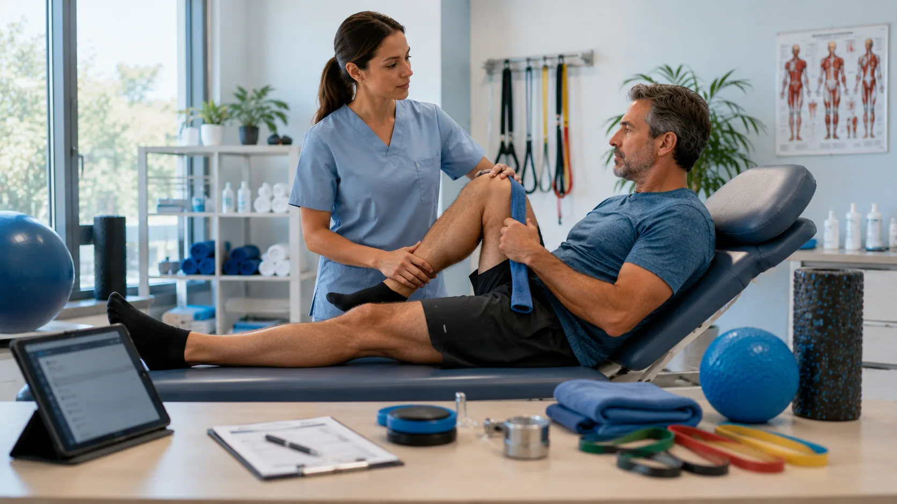

01
Fuerza y resistencia
La masa muscular y la capacidad de recuperación pueden disminuir con el tiempo, aunque el movimiento regular ayuda a conservarlas.
Envejecimiento saludable
Envejecer saludablemente significa fortalecer las capacidades que permiten realizar actividades valiosas, mantener vínculos y participar en la comunidad a lo largo del tiempo.

Una mirada integral
Es un proceso que acompaña todo el curso de vida. No exige ausencia de enfermedades: se centra en conservar y desarrollar capacidades físicas, mentales y sociales dentro de un entorno que facilite la autonomía.
Consejo IDB
La salud en personas mayores se entiende mejor cuando se miran movilidad, nutrición, sueño, memoria, ánimo y entorno cotidiano al mismo tiempo.
Curso de vida
El envejecimiento es diverso y no ocurre de la misma manera en todas las personas. Algunos cambios pueden aparecer gradualmente y no implican por sí mismos una enfermedad.
La masa muscular y la capacidad de recuperación pueden disminuir con el tiempo, aunque el movimiento regular ayuda a conservarlas.
Puede requerirse más luz para leer o mayor claridad para distinguir sonidos y conversaciones.
La piel puede volverse más fina y la adaptación al frío o al calor puede ser menos rápida.
Los horarios y la continuidad del descanso pueden cambiar, con despertares más frecuentes o sueño más ligero.
Recordar un nombre o aprender una tarea nueva puede tomar más tiempo sin impedir una vida activa y autónoma.
La historia de vida, el entorno, los hábitos y el acceso a apoyos influyen más que la edad cronológica por sí sola.
Nutrición
Una alimentación variada contribuye a mantener energía, fuerza y bienestar. Las necesidades pueden cambiar con la actividad, el apetito, la salud bucal y otras circunstancias personales.
Combinar verduras, frutas, cereales, menestras y otras fuentes de nutrientes amplía la calidad de la alimentación.
Incluir fuentes variadas de proteína forma parte del cuidado de la masa y función muscular.
Tomar líquidos de manera regular es importante porque la sensación de sed puede ser menos evidente con la edad.
Alimentos con fibra y una hidratación adecuada apoyan el funcionamiento digestivo.
La comodidad, la compañía y las preparaciones agradables pueden favorecer una relación positiva con las comidas.
Los cambios importantes de apetito, peso o capacidad para comer merecen una conversación con profesionales de salud.
Movimiento
Moverse con regularidad puede apoyar la fuerza, el equilibrio, la coordinación y la confianza para realizar actividades diarias. Cada persona puede adaptar el movimiento a sus capacidades y contexto.
Caminar, bailar o desplazarse activamente puede favorecer la resistencia y el bienestar general.
Trabajar los principales grupos musculares ayuda a conservar funciones necesarias para la vida cotidiana.
Las actividades orientadas al equilibrio pueden apoyar la estabilidad y la confianza al moverse.
Movimientos suaves y controlados contribuyen a mantener amplitud de movimiento para tareas habituales.
Buena iluminación, pasillos despejados y apoyos firmes reducen riesgos dentro del hogar.
Empezar de forma gradual y considerar orientación profesional permite adaptar la actividad a cada situación.
Recuperación
El sueño sigue siendo esencial durante toda la vida. Aunque su ritmo puede cambiar, un descanso suficiente y reparador favorece la energía, la atención y el estado de ánimo.
Mente activa
La salud cognitiva incluye pensar, aprender, recordar y tomar decisiones. Mantener actividades significativas y hábitos saludables puede apoyar estas capacidades.
Leer, practicar una habilidad o explorar intereses nuevos mantiene oportunidades de participación mental.
Calendarios, listas y lugares fijos para objetos pueden facilitar la vida cotidiana sin limitar la autonomía.
El movimiento regular forma parte de un enfoque integral para cuidar la salud cerebral.
El sueño contribuye a procesos relacionados con la atención, el aprendizaje y la memoria.
Conversar, compartir proyectos y mantener vínculos ofrece estimulación emocional y cognitiva.
Las dificultades nuevas que afectan tareas habituales deben conversarse con un profesional, sin asumir conclusiones anticipadas.
Conexión y propósito
Los vínculos, el sentido de propósito y la posibilidad de participar en decisiones propias son componentes centrales del bienestar en todas las edades.
Compartir tiempo, intereses y apoyo mutuo fortalece la conexión con familiares, amistades y comunidad.
Actividades culturales, vecinales, educativas o de voluntariado pueden ampliar redes y sentido de pertenencia.
Metas realistas, responsabilidades elegidas y proyectos personales aportan dirección a la rutina.
Las transiciones, pérdidas y nuevas funciones requieren tiempo, apoyo y oportunidades para expresar emociones.
Las herramientas digitales pueden facilitar comunicación, aprendizaje y acceso a recursos cuando son accesibles.
La tristeza persistente, el aislamiento o la pérdida de interés merecen escucha y orientación profesional o comunitaria.
Cuidado preventivo
Los controles preventivos permiten revisar cambios, actualizar medidas de protección y conversar sobre prioridades personales. Su frecuencia depende de antecedentes, edad y orientación profesional.
Conversar sobre bienestar físico, emocional, funcional y social ofrece una mirada más completa que revisar datos aislados.
Estos aspectos influyen directamente en la comunicación, la alimentación, la movilidad y la participación.
Revisar el esquema con servicios de salud permite conocer qué vacunas corresponden según el contexto individual.
Mantener una lista actualizada y revisarla con profesionales ayuda a comprender usos, horarios y posibles interacciones.
Evaluar movilidad, calzado, visión y condiciones del hogar ayuda a identificar oportunidades de seguridad.
Expresar preferencias y participar en decisiones favorece una atención respetuosa y centrada en la persona.
Artículos destacados
Doce contenidos educativos para comprender cambios, fortalecer capacidades y preparar conversaciones informadas sobre bienestar.
Una introducción al enfoque de autonomía, entorno y participación propuesto por la OMS.
Ideas generales sobre variedad, proteínas, hidratación y experiencia de comer.
Cómo integrar resistencia, fuerza, equilibrio y flexibilidad de forma gradual.
Iluminación, orden y apoyos prácticos para desplazarse con mayor confianza.
Qué variaciones son frecuentes y cuándo conviene solicitar orientación.
Aprendizaje, movimiento, descanso y vínculos como parte de una mirada integral.
Cómo observar el impacto funcional sin convertir una señal aislada en diagnóstico.
La importancia de conservar relaciones y espacios de participación significativa.
Recursos generales para afrontar cambios con apoyo, tiempo y cuidado emocional.
Preguntas, registros y prioridades que pueden facilitar una conversación útil.
Cómo expresar preferencias y participar activamente en el propio cuidado.
Accesibilidad, transporte y participación como componentes del bienestar colectivo.
Registrar patrones cotidianos ayuda a convertir dudas generales en conversaciones más claras.
Si algo se repite, empeora o limita tu rutina, conviene buscar orientación profesional.
Estos contenidos orientan y educan; no sustituyen una evaluación individual.
Preguntas frecuentes
No. El enfoque se centra en mantener capacidades, autonomía y bienestar, incluso cuando existen condiciones de salud que requieren seguimiento.
No. Los cambios graduales y adaptados pueden aportar beneficios en distintas etapas de la vida. Lo importante es considerar las posibilidades y el contexto personal.
No. Algunos olvidos ocasionales pueden ocurrir con la edad. Conviene solicitar orientación cuando los cambios son nuevos, progresivos o interfieren con actividades habituales.
No necesariamente. El movimiento puede adaptarse a cada capacidad. La regularidad, la progresión y la seguridad son aspectos importantes.
Los vínculos y la participación pueden apoyar el bienestar emocional, la estimulación cognitiva y el sentido de propósito.
Ante cambios persistentes en movilidad, memoria, ánimo, sueño, apetito o capacidad para realizar actividades cotidianas, o cuando exista cualquier preocupación importante.
Consejos prácticos en casa
Estas orientaciones son educativas y no reemplazan una evaluación individual. La mejor estrategia es realista, progresiva y respetuosa de las preferencias de cada persona.
Elige actividades que conecten con intereses, valores y metas personales.
Integra actividad física posible y segura dentro de la rutina cotidiana.
La variedad, la hidratación y el sueño forman parte de una base integral de bienestar.
Reserva tiempo para conversar, compartir y participar en espacios de comunidad.
Lleva preguntas, registros y una lista actualizada de medicamentos a las consultas.
Buscar orientación ante cambios que preocupan ayuda a identificar necesidades y recursos disponibles.
Qué debes recordar
La meta no es solo vivir más años, sino sostener capacidad funcional, participación y decisiones acompañadas.
Fuentes científicas
El contenido tiene fines educativos generales y se basa en recursos institucionales de salud pública, envejecimiento y bienestar.
También te puede interesar
Explora síntomas, enfermedades, medicamentos y recursos educativos conectados con este tema.
Orientación sobre caidas, equilibrio y seguridad cotidiana.
Síntoma relacionadoPérdida de memoriaInformación sobre cambios de memoria y acompañamiento oportuno.
Síntoma relacionadoHinchazón de piernasSeñales relacionadas con edema, circulacion y consulta preventiva.

Enfermedad relacionadaOsteoporosisContenido educativo sobre salud ósea y prevención de fracturas.
 Medicamento relacionadoMultivitamínico adulto
Medicamento relacionadoMultivitamínico adultoInformación orientativa sobre suplementos y consulta profesional.
 Recurso educativoActividad física
Recurso educativoActividad físicaMovimiento diario, movilidad y rutinas seguras para el bienestar.

Soy VITA. Puedo ayudarte a comprender síntomas, enfermedades y medicamentos mediante orientación médica informativa basada en evidencia científica.
Información educativa para envejecimiento saludable. Las decisiones sobre medicamentos, caídas o cambios cognitivos requieren orientación profesional. Revisa el criterio editorial y las referencias generales en Fuentes IDB.